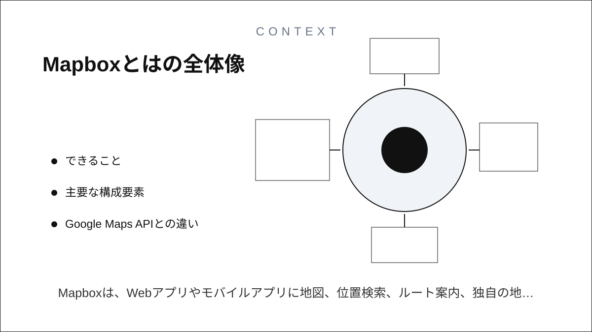
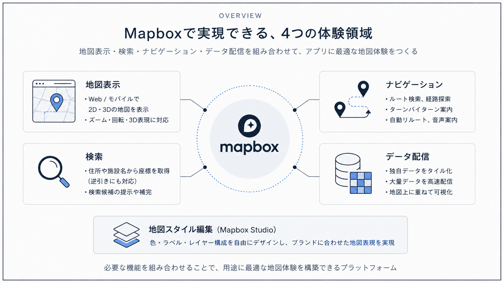
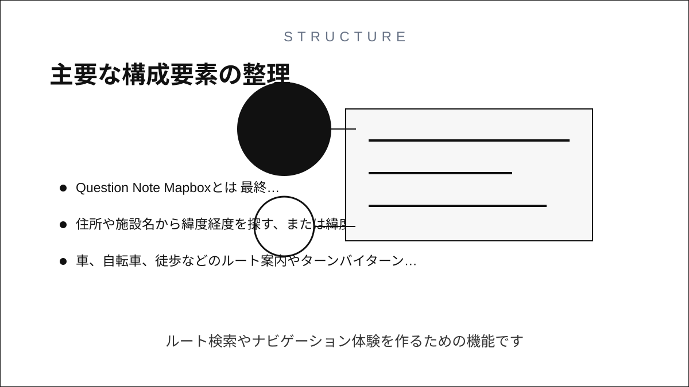
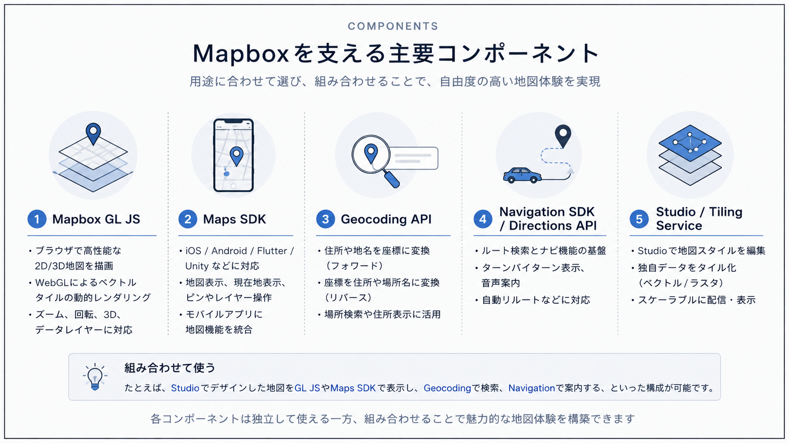
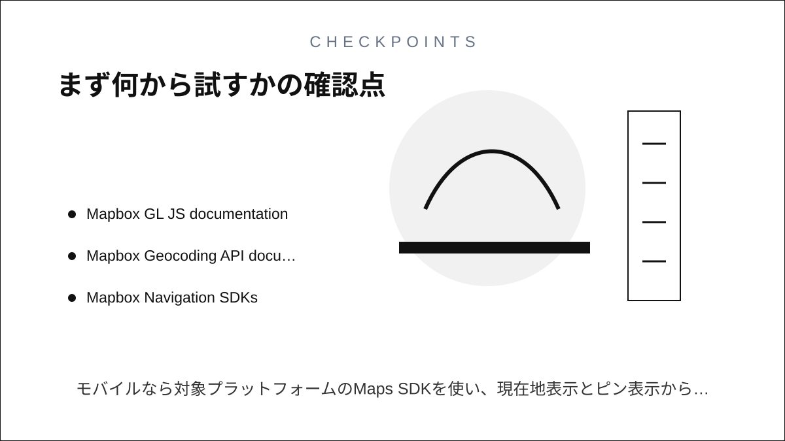

Question Note
Mapboxとは


Mapboxは、Webアプリやモバイルアプリに地図、位置検索、ルート案内、独自の地理データ表示を組み込むためのロケーション開発プラットフォームです。 単に地図画像を貼るサービスではなく、地図デザイン、タイル配信、検索API、ナビゲーションSDKなどを組み合わせて、アプリ内の地図体験を作るために使います。

できること
- Web上でインタラクティブな2D/3D地図を表示する
- 住所や施設名から緯度経度を探す、または緯度経度から住所を調べる
- 車、自転車、徒歩などのルート案内やターンバイターンナビを実装する
- 自社データや公開データをタイル化して、大量の地理データを高速に表示する
- Mapbox Studioで地図の色、ラベル、レイヤー構成を編集する
主要な構成要素
Mapbox GL JS
ブラウザ上でMapboxの地図を描画するJavaScriptライブラリです。 WebGLを使ってベクトル地図を動的に描画するため、ズーム、回転、3D表現、データレイヤーの追加などに向いています。

Maps SDK
iOS、Android、Flutter、UnityなどのアプリにMapboxの地図を組み込むためのSDK群です。 モバイルアプリ内で地図表示、現在地表示、地図上の注釈やレイヤー操作を扱うときに使います。
Geocoding API
住所や地名を座標に変換するフォワードジオコーディングと、座標を住所や場所名に変換するリバースジオコーディングを提供します。 ユーザー入力から場所を検索したり、地図上で選んだ地点の住所を表示したりする用途に使います。
Navigation SDK / Directions API
ルート検索やナビゲーション体験を作るための機能です。 Navigation SDKはDirections APIを土台にしており、ターンバイターン表示、音声案内、自動リルートなどをアプリに組み込めます。
Mapbox Studio / Tiling Service
Mapbox Studioは地図スタイルを編集するためのツールです。 Mapbox Tiling Serviceは、独自の地理データをベクトルタイルやラスタタイルに変換してMapbox上で配信するための仕組みです。
Google Maps APIとの違い
Google Maps APIが一般的な地図、検索、経路機能をすばやく組み込む用途でよく使われるのに対し、Mapboxは地図デザインやデータレイヤーの自由度が高い点が特徴です。 ブランドに合わせた地図表現、物流や不動産などの業務データ表示、独自タイルの配信が必要な場合はMapboxが候補になります。 一方で、Googleの地点データや口コミ、店舗情報との連携が主目的ならGoogle Maps Platformのほうが合う場合もあります。
使うときの注意
- 本番利用ではアクセストークン、料金体系、利用量上限を事前に確認する
- 公開地図ではMapboxやデータ提供元の帰属表示を消さない
- 住所検索やナビゲーションの精度は国、地域、データ種別によって差がある
- 独自データをアップロードする場合は、公開範囲とライセンスを確認する
まず何から試すか
WebならMapbox GL JSで地図を1枚表示し、次にマーカーやGeoJSONレイヤーを重ねるのが始めやすいです。 モバイルなら対象プラットフォームのMaps SDKを使い、現在地表示とピン表示から試すと全体像をつかみやすくなります。
